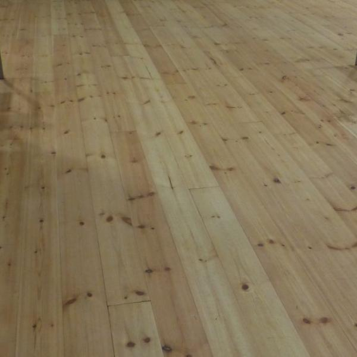
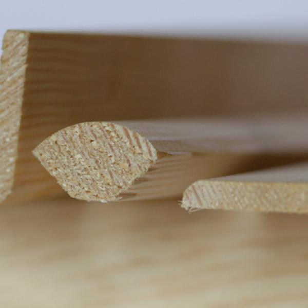
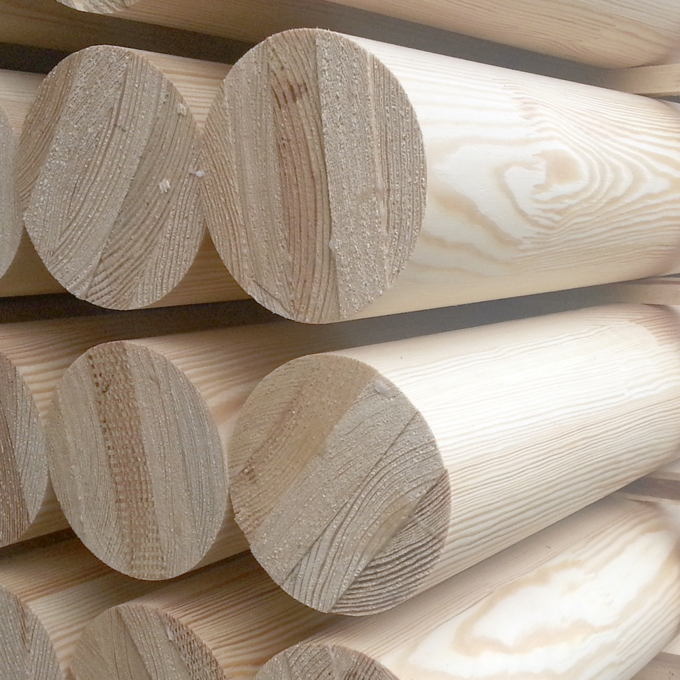

Deska sosnowa podłogowa
Klasyczne rozwiązanie do wnętrz, gdzie liczy się naturalne drewno, trwałość i przyjemny, ciepły charakter podłogi.
Rozszerzyliśmy architekturę strony tak, aby wszystkie główne grupy produktów z oryginalnego serwisu miały swoje miejsce i własne przejścia w menu.
Poniżej zebrane są główne kategorie oferty w czytelnej, nowoczesnej formie. Każdy blok odpowiada realnym pozycjom z oryginalnej struktury serwisu.

Klasyczne rozwiązanie do wnętrz, gdzie liczy się naturalne drewno, trwałość i przyjemny, ciepły charakter podłogi.

Materiały do wykończenia zewnętrznego, które łączą estetykę z odpornością i dobrze wpisują się w nowoczesne realizacje.

Elementy przygotowane pod dalszą obróbkę, produkcję komponentów i zastosowania stolarskie.

Materiały do małej architektury, ogrodzeń, pergoli, tarasów i konstrukcji wokół domu oraz ogrodu.

Rozwiązania do wnętrz i na zewnątrz, gdzie liczy się estetyka powierzchni i wygoda montażu.

Produkty dla bardziej wymagających zastosowań, gdzie ważna jest stabilność materiału i jakość wykończenia.

Detale wykończeniowe uzupełniające wnętrza i systemy zabudowy o spójny drewniany charakter.

Materiał przeznaczony do zastosowań nośnych i budowlanych, wspierany komunikatem jakościowym CE.

Podstawowa grupa materiałowa, od której zaczyna się wiele dalszych zastosowań w budowie i przemyśle drzewnym.
Producent deski podłogowej, drewna konstrukcyjnego, tarcicy i wyrobów drewnianych w Polsce.